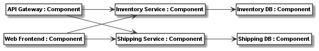
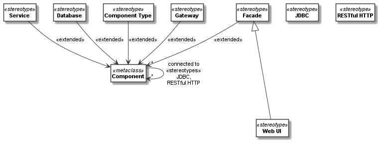
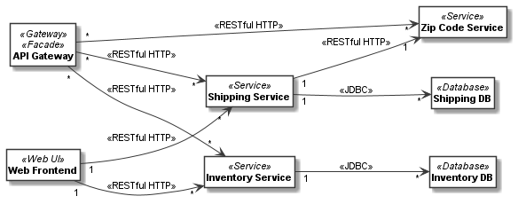
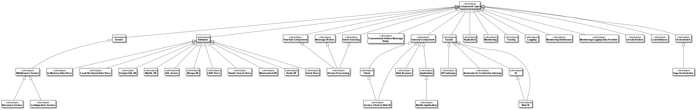
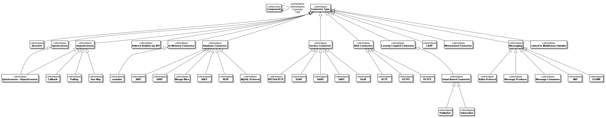
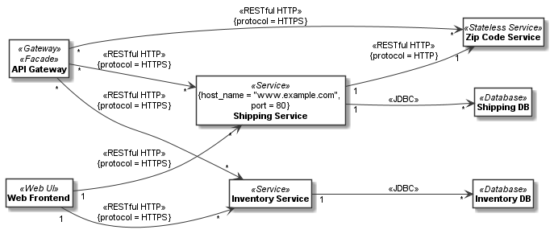
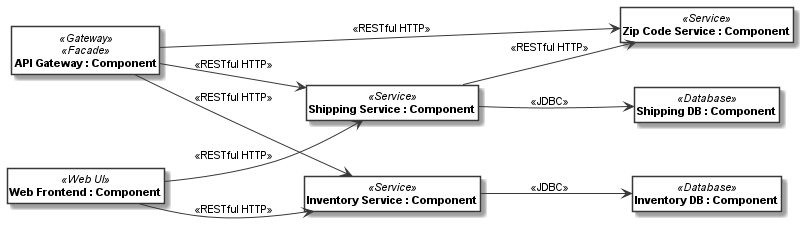
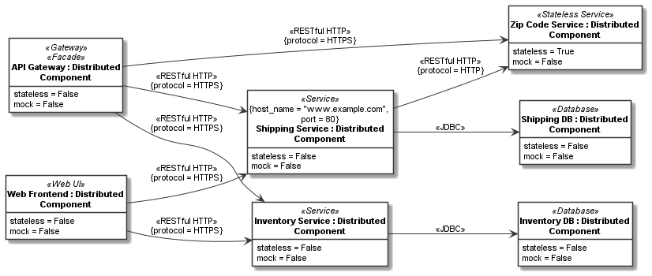

A meta-model with stereotypes¶
The need for stereotypes in meta-models¶
Stereotypes provide a way for extending existing meta-classes and meta-class associations. They can be seen as additional, orthogonal classifications or types for the classifiers derived from the meta-classes and meta-class associations.
To illustrate this, let us consider a very simple definition of a component and connector meta-model. We just define a metaclass for components and use associations to represent the connectors:
component = CMetaclass("Component")
connectors_relation = component.association(component, "connected to: [source] * -> [target] *")
With this minimal meta-model, we can define meaningful component models, such as the following. It models two services each with a database per service, as well as an API gateway and a Web frontend accessing the services:
api_gateway = CClass(component, "API Gateway")
inventory_service = CClass(component, "Inventory Service")
shipping_service = CClass(component, "Shipping Service")
web_frontend = CClass(component, "Web Frontend")
inventory_db = CClass(component, "Inventory DB")
shipping_db = CClass(component, "Shipping DB")
for target in [inventory_service, shipping_service]:
api_gateway.association(target, "* -> *", derived_from=connectors_relation)
for target in [inventory_service, shipping_service]:
web_frontend.association(target, "1 -> *", derived_from=connectors_relation)
for source, target in {inventory_service: inventory_db, shipping_service: shipping_db}.items():
source.association(target, "1 -> *", derived_from=connectors_relation)
Here is the model rendered as a class model:

Again, it is also possible to model at the meta-class instance level and depict the classes and their links in an object diagram:
api_gateway = CClass(component, "API Gateway")
inventory_service = CClass(component, "Inventory Service")
shipping_service = CClass(component, "Shipping Service")
web_frontend = CClass(component, "Web Frontend")
inventory_db = CClass(component, "Inventory DB")
shipping_db = CClass(component, "Shipping DB")
add_links({api_gateway: [inventory_service, shipping_service],
web_frontend: [inventory_service, shipping_service],
inventory_service: inventory_db,
shipping_service: shipping_db},
role_name="target")
Here is the model rendered as an meta-class instance model:
To make such models more meaningful and also to be able to automatically process them, be it for analysis or code generation, we might need a bit more information about the components and connectors. For example, we might want to distinguish service, database, Web, and gateway components. The obvious way to do this is subclassing:
service = CMetaclass("Service", superclasses=component)
gateway = CMetaclass("Gateway", superclasses=component)
web_ui = CMetaclass("Web UI", superclasses=component)
database = CMetaclass("Database", superclasses=component)
While this is good and fine for many tasks, it has the disadvantage that users of the metamodel cannot easily extend the components with their own types anymore. Consider for example we also want to model which type of access control a component uses, such as API keys, an authentification protocol, or no access control. Further, as a third notion, for each component we want to be able to model, whether it is a Facade for a sub-system or not. With multiple inheritance we could do this, but we would need to derive all possible combinations of meta-classes, as exemplified below for three of the many possible combinations:
facade_service_with_api_keys = CMetaclass("Facade Service with API Keys", superclasses=[service, facade, api_keys])
service_with_api_keys = CMetaclass("Service with API Keys", superclasses=[service, api_keys])
facade_api_gateway_no_access_control = CMetaclass("Facade Gateway / No Access Control",
superclasses=[facade, gateway])
...
Deriving all possible combinations would lead to a combinatorial explosion of classes.
In addition, associations might need multiple classifications, too. For instance, in our example we might want to specify the type of the connector, such as a Restful HTTP or JDBC connector. Extending associations as done above would be more tricky.
The full code of the examples in this first part of this tutorial can be found in the samples Microservice Component Model 1 as Class Model and Microservice Component Model 1 as Instance Model.
Using stereotypes in meta-models¶
The problems outlined in the previous section can be avoided by using stereotypes for various kinds of orthogonal
classifications and other extensions. CStereotype is used for defining stereotypes. They can be
added to a meta-class using the extended property of CStereotype or using the stereotypes property
of CMetaclass.
For example, lets realize the component and connector types from the examples above plus the orthogonal extension that some components can be facades. Web UIs are always facade components, other services and gateways may or may not be facades. This can be modelled with the following stereotype extensions to our meta-model above:
service = CStereotype("Service", extended=component)
database = CStereotype("Database", extended=component)
facade = CStereotype("Facade", extended=component)
web_ui = CStereotype("Web UI", superclasses=facade)
gateway = CStereotype("Gateway", extended=component)
jdbc = CStereotype("JDBC", extended=connectors_relation)
restful_http = CStereotype("RESTful HTTP", extended=connectors_relation)
Below you can see the meta-model with extensions rendered:
{kind=link}
Please note that the UML Profile Extension relation notation (a filled triangle arrowhead pointing from a stereotype
to the extended metaclass) is not supported by Plant UML yet. We have thus decided to render the extension relation
of meta-classes using an extended stereotype on the extension relation. As in our models typically the
association is not shown as a meta-class, we put a stereotypes stereotype on the label of the association that
is extended.
Stereotype instances on class models¶
To use stereotypes in a class model, the stereotype_instances property of the class or a derived
association of the class should be used. It accepts a single or a list of stereotypes.
Any CStereotype extending the meta-class can be used as a stereotype instance on classes derived from
that meta-class. Any CStereotype extending a meta-class association can be used as a stereotype
instance on a derived class-level association.
That is, the list of stereotypes on the meta-class or meta-class association (or on their superclasses)
defines the possible stereotypes instances of a class or a class’ derived associations.
With the meta-model extension above, we can define a sample class model as follows:
api_gateway = CClass(component, "API Gateway", stereotype_instances=[gateway, facade])
zip_code_service = CClass(component, "Zip Code Service", stereotype_instances=service)
inventory_service = CClass(component, "Inventory Service", stereotype_instances=service)
shipping_service = CClass(component, "Shipping Service", stereotype_instances=service)
web_frontend = CClass(component, "Web Frontend", stereotype_instances=web_ui)
inventory_db = CClass(component, "Inventory DB", stereotype_instances=database)
shipping_db = CClass(component, "Shipping DB", stereotype_instances=database)
shipping_service_zip_code_association = \
shipping_service.association(zip_code_service, "1 -> 1", derived_from=connectors_relation,
stereotype_instances=restful_http)
for target in [inventory_service, shipping_service, zip_code_service]:
api_gateway.association(target, "* -> *", derived_from=connectors_relation, stereotype_instances=restful_http)
for target in [inventory_service, shipping_service]:
web_frontend.association(target, "1 -> *", derived_from=connectors_relation, stereotype_instances=restful_http)
for source, target in {inventory_service: inventory_db, shipping_service: shipping_db}.items():
source.association(target, "1 -> *", derived_from=connectors_relation, stereotype_instances=jdbc)
Here is the model rendered as an class diagram:
The full code of the example can be found in the sample Microservice Component Model 2 as Class Model.
Using stereotype superclasses for extensions¶
So far, all stereotypes extend the meta-classes and meta-class associations directly. In our own work, we usually introduce a superclass for each kind of stereotype to better organize meta-models.
For example, the meta-model in the Codeable Models distribution in folder metamodels/component_metamodel.py
extends the component and connector meta-classes with a component type and connector type stereotype:
component = CMetaclass("Component")
component_type = CStereotype("Component Type", extended=component)
connectors_relation = component.association(component, "connected to: [source] * -> [target] *")
connector_type = CStereotype("Connector Type", extended=connectors_relation,
attributes={"description": str})
Here is the Plant UML visualization of this model:

Specific component models can now extend the types by subclassing them and/or add orthogonal extensions in separate stereotype hierarchies. For example the Microservice Components Metamodel for modelling microservice component models, at the time of this writing had the following component types defined:
{kind=link}
It defines also the following connector types:
{kind=link}
Tagged values¶
As in UML, stereotypes can introduce new attributes only valid for stereotyped instances. Those are called
tagged values on the instances, i.e. classes or their derived associations.
Tagged values can simply be defined as attributes on the stereotype. For example, we might want to
extend components which are services with host name and port values:
service = CStereotype("Service", extended=component, attributes={
"host_name": str,
"port": int
})
We might further want to extend the restful_http connector with an attribute to select, if it is an HTTP or HTTPS
connection:
http_protocol = CEnum("HTTP Protocol", values=["HTTP", "HTTPS"])
restful_http = CStereotype("RESTful HTTP", extended=connectors_relation, attributes={
"protocol": CAttribute(type=http_protocol, default="HTTPS"),
})
The property tagged_values and the methods get_tagged_value(), set_tagged_value(),
and delete_tagged_value() can be used on any class or derived association (or link).
Those properties and methods work exactly like the respective ordinary operations on values.
The tagged value can be accessed on a class, derived assocation, or link if a stereotype instance
is derived from a stereotype that has defined the tagged values as attributes.
For example, lets consider we want to set host name and port of the shipping services:
shipping_service.set_tagged_value("host_name", "www.example.com")
shipping_service.set_tagged_value("port", 80)
We can print out the result of this change as follows:
print(f'shipping service is running on {shipping_service.get_tagged_value("host_name")!s} ' +
f'and port {shipping_service.get_tagged_value("port")!s}')
The result is:
shipping service is running on www.example.com and port 80
Consider we want to change the link between shipping service and zip code service to HTTP. Then we need to
call set_tagged_value() on the derived association:
print(f"old protocol shipping service to zip code: " +
f"{shipping_service_zip_code_association.get_tagged_value('protocol')}")
shipping_service_zip_code_association.set_tagged_value('protocol', "HTTP")
print(f"new protocol shipping service to zip code: " +
f"{shipping_service_zip_code_association.get_tagged_value('protocol')}")
Here we also print the old and the new tagged value, which yields the following result:
old protocol shipping service to zip code: HTTPS
new protocol shipping service to zip code: HTTP
Here is the model rendered as an class diagram with tagged values on classes and associations displayed:
Stereotype introspection¶
A meta-class or association can be queried for its stereotypes using the stereotypes property. For example,
we could print the stereotypes of the component and connector_relation meta-classes:
print(f"component stereotypes = {component.stereotypes!s}")
print(f"connector stereotypes = {connectors_relation.stereotypes!s}")
This would print something like:
component stereotypes = [<codeable_models.cstereotype.CStereotype object at 0x00000229793B8608>: Component Type, <codeable_models.cstereotype.CStereotype object at 0x000002297945A708>: Service, <codeable_models.cstereotype.CStereotype object at 0x000002297945AE88>: Database, <codeable_models.cstereotype.CStereotype object at 0x000002297945E0C8>: Facade, <codeable_models.cstereotype.CStereotype object at 0x000002297945E208>: Gateway]
connector stereotypes = [<codeable_models.cstereotype.CStereotype object at 0x00000229793B8C88>: Connector Type, <codeable_models.cstereotype.CStereotype object at 0x000002297945E548>: JDBC, <codeable_models.cstereotype.CStereotype object at 0x0000022979464DC8>: RESTful HTTP]
In addition, get_stereotypes(name) can find all stereotypes with a given name, and
get_stereotype(name) the first stereotype with a name, respectively.
On the stereotype we can introspect the same relation using the extended property returning all extended
meta-classes or associations. For example, we could print this information for two of the stereotypes:
print(f"facade extended = {facade.extended!s}")
print(f"restful_http extended = {restful_http.extended!s}")
This would print something like:
facade extended = [<codeable_models.cmetaclass.CMetaclass object at 0x000001F4E8C27448>: Component]
restful_http extended = [CAssociation name = connected to, source = Component -> target = Component]
Stereotype instance introspection on class models¶
With the stereotype_instances property we can get the stereotype instances defined on a class or a derived
association. For example, we can print the stereotype instances for one of the database classes and
one of the Restful HTTP links:
print(f"Shipping DB stereotype instances: {shipping_db.stereotype_instances!s}")
print(f"Shipping service to zip code association stereotype instances: " +
f"{shipping_service_zip_code_association.stereotype_instances!s}")
This would print something like:
Shipping DB stereotype instances: [<codeable_models.cstereotype.CStereotype object at 0x0000024FA3B37F08>: Database]
Shipping service to zip code association stereotype instances: [<codeable_models.cstereotype.CStereotype object at 0x0000024FA3B72DC8>: RESTful HTTP]
The extended instances of a stereotype can be introspected with extended_instances. It gets the
extended instances, i.e. the classes or derived associations (and/or class links)
extended by the stereotype. all_extended_instances
is a getter to get all the extended instances, i.e. the classes or class links
extended by a stereotype, including those on subclasses. For example, we can print extended instances
for a few stereotypes:
print(f"extended instances of database: {database.extended_instances!s}")
print(f"all extended instances of component: {service.extended_instances!s}")
print(f"extended instances of restful_http: {restful_http.extended_instances!s}")
This would print something like:
extended instances of database: [<codeable_models.cclass.CClass object at 0x0000024285F83FC8>: Inventory DB, <codeable_models.cclass.CClass object at 0x0000024285F83E08>: Shipping DB]
all extended instances of component: [<codeable_models.cclass.CClass object at 0x0000024285F80E08>: Inventory Service, <codeable_models.cclass.CClass object at 0x0000024285F83908>: Shipping Service]
extended instances of restful_http: [CAssociation name = , source = Shipping Service -> target = Zip Code Service, CAssociation name = , source = API Gateway -> target = Inventory Service, CAssociation name = , source = API Gateway -> target = Shipping Service, CAssociation name = , source = API Gateway -> target = Zip Code Service, CAssociation name = , source = Web Frontend -> target = Inventory Service, CAssociation name = , source = Web Frontend -> target = Shipping Service]
The full code of these examples of class-level models can be found in the sample Microservice Component Model 3 as Class Model.
Stereotype instances on instance models¶
Just as explain in A first meta-model, an alternative to deriving as class-level model from a meta-model is to provide an instance-level model, which would be depicted as an object diagram. Again, the classes can be defined exactly in the same way as for the class-level model, only links with the respective stereotype instances need to be used:
api_gateway = CClass(component, "API Gateway", stereotype_instances=[gateway, facade])
zip_code_service = CClass(component, "Zip Code Service", stereotype_instances=service)
inventory_service = CClass(component, "Inventory Service", stereotype_instances=service)
shipping_service = CClass(component, "Shipping Service", stereotype_instances=service)
web_frontend = CClass(component, "Web Frontend", stereotype_instances=web_ui)
inventory_db = CClass(component, "Inventory DB", stereotype_instances=database)
shipping_db = CClass(component, "Shipping DB", stereotype_instances=database)
add_links({shipping_service: zip_code_service,
api_gateway: [inventory_service, shipping_service, zip_code_service],
web_frontend: [inventory_service, shipping_service]},
role_name="target", stereotype_instances=restful_http)
add_links({inventory_service: inventory_db, shipping_service: shipping_db},
role_name="target", stereotype_instances=jdbc)
Here is the model rendered as an instance model (object diagram):
Stereotype superclasses, tagged values, and stereotype introspection work on instance-level models in the same way as explained above for class-level models. For tagged values, the class links must have the stereotype instances defined on them, instead of the derived associations used in the examples above.
The full code of these examples for instance level models can be found in the sample Microservice Component Model 2 as Instance Model.
Default values on stereotypes¶
A feature that makes more sense to be used on instance-level models (even though it works in class-level models as well) are default values on stereotypes. They enable us to use stereotype default values to overwrite those of meta-classes. Among other things, this feature make more sense to be used on instance-level models, as object diagrams show these values, whereas class diagrams do not.
Consider we want to build our system from distributed components. For example, for the purpose of selecting the proper code generation and deployment tasks in our tool chain, it shall be modeled, whether these components are mock components or not, and whether they are stateless or not. This can be modelled using a special component class with those attributes:
distributed_component = CMetaclass("Distributed Component", superclasses=component,
attributes={
"stateless": False,
"mock": False
})
Assuming that the distributed component classes are derived from this meta-class, we could derive a
stateless service stereotype from service as a subclass. Here, it is undesirable that the default value
for the stateless attribute is False for such stereotyped stateless components of which
we already know that they are stateless, once the stereotype is used.
With the default_values dictionary, a stereotype can redefine default values of the
extended meta-class:
stateless_service = CStereotype("Stateless Service", extended=distributed_component,
superclasses=service,
default_values={"stateless": True})
Please note that we must specify that distributed_component is extended, in order
to redefine a default value of it, as the default value is unknown
for the superclass component which service extends. Of course, alternatively,
this can also be done by letting service extend distributed component in the first place like this:
service = CStereotype("Service", extended=distributed_component)
stateless_service = CStereotype("Stateless Service", superclasses=service,
default_values={"stateless": True})
Now consider we model the components and connectors like this:
api_gateway = CClass(distributed_component, "API Gateway", stereotype_instances=[gateway, facade])
zip_code_service = CClass(distributed_component, "Zip Code Service", stereotype_instances=stateless_service)
inventory_service = CClass(distributed_component, "Inventory Service", stereotype_instances=service)
shipping_service = CClass(distributed_component, "Shipping Service", stereotype_instances=service)
web_frontend = CClass(distributed_component, "Web Frontend", stereotype_instances=web_ui)
inventory_db = CClass(distributed_component, "Inventory DB", stereotype_instances=database)
shipping_db = CClass(distributed_component, "Shipping DB", stereotype_instances=database)
add_links({api_gateway: [inventory_service, shipping_service, zip_code_service],
web_frontend: [inventory_service, shipping_service],
shipping_service: zip_code_service},
role_name="target", stereotype_instances=restful_http)
add_links({inventory_service: inventory_db, shipping_service: shipping_db},
role_name="target", stereotype_instances=jdbc)
If we now access the attribute values of the stateless service, it has the changed value True for stateless
whereas other services still have False as a value, e.g.:
print(f"inventory service values = {inventory_service.values!s}")
print(f"zip code service values = {zip_code_service.values!s}")
This prints:
inventory service values = {'stateless': False, 'mock': False}
zip code service values = {'stateless': True, 'mock': False}
Here is the model with attributes set from default values shown as an instance model (object diagram). The diagram also shows tagged values (assuming exactly the same tagged values are used as in the class-level model above).
Stereotype instance introspection on instance models¶
With the stereotype_instances property we can get the stereotype instances defined on a link of a class, too.
For example, we can print the stereotype instances for one of the database classes and one of the Restful HTTP links:
print(f"Shipping DB stereotype instances: {shipping_db.stereotype_instances!s}")
print(f"Shipping service to zip code link stereotype instances: " +
f"{shipping_service_zip_code_service_link.stereotype_instances!s}")
This would print something like:
Shipping DB stereotype instances: [<codeable_models.cstereotype.CStereotype object at 0x00000242DFABAF08>: Database]
Shipping service to zip code link stereotype instances: [<codeable_models.cstereotype.CStereotype object at 0x00000242DFAC4E48>: RESTful HTTP]
The extended instances of a stereotype can be introspected with extended_instances, as explained above. For
the link it would be called as follows:
print(f"extended instances of restful_http: {restful_http.extended_instances!s}")
This would print something like:
extended instances of restful_http: [`CLink <codeable_models.clink.CLink object at 0x0000024285F86908> source = <codeable_models.cobject.CObject object at 0x0000024285F83508>: Shipping Service -> target = <codeable_models.cobject.CObject object at 0x0000024285F80AC8>: Zip Code Service`, `CLink <codeable_models.clink.CLink object at 0x0000024285F86B48> source = <codeable_models.cobject.CObject object at 0x0000024285F800C8>: API Gateway -> target = <codeable_models.cobject.CObject object at 0x0000024285F835C8>: Inventory Service`, `CLink <codeable_models.clink.CLink object at 0x0000024285F86C88> source = <codeable_models.cobject.CObject object at 0x0000024285F800C8>: API Gateway -> target = <codeable_models.cobject.CObject object at 0x0000024285F83508>: Shipping Service`, `CLink <codeable_models.clink.CLink object at 0x0000024285F86B08> source = <codeable_models.cobject.CObject object at 0x0000024285F800C8>: API Gateway -> target = <codeable_models.cobject.CObject object at 0x0000024285F80AC8>: Zip Code Service`, `CLink <codeable_models.clink.CLink object at 0x0000024285F86E88> source = <codeable_models.cobject.CObject object at 0x0000024285F834C8>: Web Frontend -> target = <codeable_models.cobject.CObject object at 0x0000024285F835C8>: Inventory Service`, `CLink <codeable_models.clink.CLink object at 0x0000024285F86F48> source = <codeable_models.cobject.CObject object at 0x0000024285F834C8>: Web Frontend -> target = <codeable_models.cobject.CObject object at 0x0000024285F83508>: Shipping Service`]
The full code of these examples of instance level models can be found in the sample Microservice Component Model 3 as Instance Model.